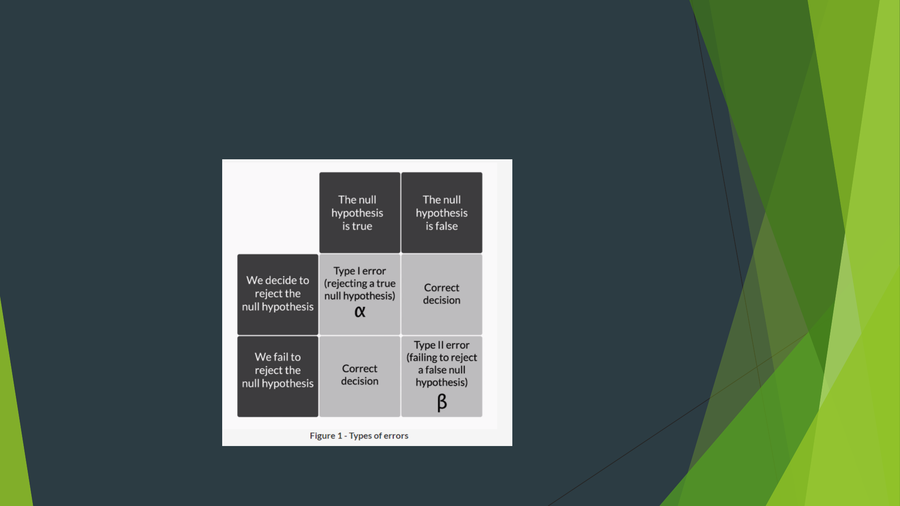

Hypothesis Testing by
Avinash Dwivedi
Avinash Dwivedi
AI ML NLP DL Cloud & Data Science

Introduction – Hypothesis Testing
Inferential statistics: Making inferences about the population using the sample
data
sometimes you have some starting assumption about the population mean and
you want to confirm those assumptions using thesample data. It is here
thathypothesis testingcomes into the picture.

Divide whole Population into 2 parts
Test Population - A population where you run the campaign
Control Population – Where you don’t run the campaign
Type of Hypothesis
1. Null Hypothesis – The null hypothesis would contain the equality parameter.
So you would assume that difference between response rates of both
groups/population is equal to zero, or you can say that the difference is
statistically insignificant.
2. Alternate Hypothesis - difference between response rates of both
groups/population is not equal to zero, or you can say that the difference is
statistically significant.

Work flow
T test statistics – you reject the Null Hypothesis at a specified significance
level (95 % - 99% confidence interval) and say that the model is valid.
To test Validity of Model we do Hypothesis Testing by dividing it into Null and
alternate.
E.g – y1 = m1x1 +m2x2+ m3x3 ……..
If all the parameter value m1, m2 m3 … is equal to 0 we call it Null
Hypothesis.
Atleast one of the parameter value/estimate of m1, m2 m3 … is non zero we
call it Alternate Hypothesis.
Rule to formulate
You can use the following rule to formulate the null and alternate hypotheses:
1. The null hypothesisalways has the following signs: = OR ≤ OR ≥
2. The alternate hypothesisalways has the following signs: ≠ OR > OR
<
Situation 1:Flipkart claimed that its total valuation in December 2016 was
at least $14 billion. Here, the claim contains ≥ sign (i.e. the at least sign),
sothe null hypothesis is the original claim.
Rule to formulate
Situation 2:Flipkart claimed that its total valuation in December 2016 was
greater than $14 billion. Here, the claim contains > sign (i.e. the ‘more than’
sign), sothe null hypothesis is the complement of the original claim. The
hypothesis in this case can be formulated as:

Null and Alternate Hypotheses – Quiz 1
The average commute time for an UpGrad employee to and from office is at
least 35 minutes.What will be the null and alternate hypotheses in this case if
the average time is represented by μ?
1. H₀: μ ≤ 35 minutes and H₁: μ > 35 minutes
2. H₀: μ > 35 minutes and H₁: μ ≤ 35 minutes
3. H₀: μ ≥ 35 minutes and H₁: μ < 35 minutes
4. H₀: μ < 35 minutes and H₁: μ ≥ 35 minutes
Decision making -Critical Value Method
Decision making -Critical Value Method
p-value method.
The p-value method of hypothesis testing
Types of errors in hypothesis testing
P - Value
p-valueas theprobability of the null hypothesisbeing accepted
Higher the p-value,higher is the probability of failing to reject a null
hypothesis. On the other hand, lower the p-value, higher is the probability of
the null hypothesis being rejected.
p-value is equivalent to the
probability of the null hypothesis
being accepted (or more aptly, not
being rejected). So, the smaller the p
-value, the farther will be the sample
mean from the hypothesised
population mean, which indicates
more evidence that the sample
mean lies in the critical region, and
the alternate hypothesis is accepted.
How to calculate p value
To find the correct p-value from the z-score, first find thecumulative
probabilityby simply looking at the z-table, which gives you the area under
the curve till that point.
Situation 1:The sample mean is on the right side of the distribution mean
(the z-score is positive)
Example:z-score for sample point = + 3.02
Cumulativeprobabilityofsamplepoint=0.9987
Forone-tailedtest→p=1-0.9987=0.0013
Fortwo-tailedtest→p=2(1-0.9987)=2*0.0013
=0.0026

Type of Test
You can tell the type of the test and the position of the critical region on the
basis of the ‘sign’ in the alternate hypothesis.
≠ in H₁ → Two-tailed test → Rejection region onboth sidesof
distribution
< in H₁ → Lower-tailed test → Rejection region onleft sideof
distribution
> in H₁ → Upper-tailed test → Rejection region onright sideof
distribution

Types of Error
When to use Z & T test
The most important use of the t-distribution is that you can approximate the value of the
standard deviation of the population (σ) from the sample standard deviation (s).
However, as the sample size increases more than 30, the t-value tends to be equal to the z-
value.
Comparision

Z & T wrap-up
If you look at how the method of making a decision changes if you are using the
sample’s standard deviation instead of the population’s. If you recall the critical
value method, the first step is as follows:
1. Calculate the value of Zc from the given value of α (significance level). Take it
as 5% if not specified in the problem.
So, to find Zc, you would use the t-table instead of the z-table. The t-table
contains values of Zc for a given degree of freedom and value of α (significance
level). Zc, in this case, can also be called as t-statistic (critical).
Practically you would not need to refer to the z or the table when doing
hypothesis testing in the industry. Going forward when you need to do hypothesis
testing in demonstrations of Excel or R, you would use the term t-test since that is
mostly performed in the industry. All calculations and results of a t-test are same
as the z-test whenever the sample size ≥ 30.

Two-sample Mean Test
Two-sample mean test - paired is used when your sample observations are
from the same individual or object. During this test, you are testing the same
subject twice. For example, if you are testing a new drug, you would need to
compare the sample before and after the drug is taken to see if the results
are different.
Two-sample mean test - unpaired is used when your sample observations are
independent. During this test, you are not testing the same subject twice. For
example, if you are testing a new drug, you would compare its effectiveness
to that of the standard available drug. So, you would take a sample of
patients who consumed the new drug and compare it with those who
consumed the standard drug.

Two-sample Proportion Test
Two-sample proportion test is used when your sample observations are
categorical, with two categories. It could be True/False, 1/0, Yes/No,
Male/Female, Success/Failure etc.
For example, if you are comparing the effectiveness of two drugs, you would
define the desired outcome of the drug as the success. So, you would take a
sample of patients who consumed the new drug and record the number of
successes and compare it with successes in another sample who consumed the
standard drug.

A/B Testing
A/B testing is a direct industry application of the two-sample proportion test
sample.
While developing an e-commerce website, there could be different opinions
about the choices of various elements, such as the shape of buttons, the text
on the call-to-action buttons, the colour of various UI elements, the copy on
the website, or numerous other such things.
Often, the choice of these elements is very subjective and is difficult to
predict which option would perform better. To resolve such conflicts, you can
use A/B testing. A/B testing provides a way for you to test two different
versions of the same element and see which one performs better.
A/B testing is entirely based on the two-sample proportion test, as the two-
sample proportion test is used when you want to compare the proportions of
two different samples. You can use various tools to conduct A/B testing (or
two-sample proportion test) like R, Optimizely etc.
Summary

summarize, hypothesis testing
To summarize, hypothesis testing still holds importance in the following two
types of industries, even if all the data is available digitally:
1. Manufacturing processes in the food, pharmaceuticals, chemicals
industries, where it is not practically possible to gather information on the
entire population.
2. E-commerce, advertising and digital marketing companies, where the
amount of data collected from various samples is so huge that analysing all
data becomes very difficult without having big data systems in place.
Lending Club Case Study
Avinash Dwivedi
AI ML NLP DL Cloud & Data Science

Lending Club Case Study
To identify the risky loan applicants at the time of loan application so that
such loans can be reduced thereby cutting down the amount of credit loss.
Identification of such applicants using EDA is the aim of this case study.
Business Objectives: To understand the driving factors (or driver variables)
behind loan default, i.e. the variables which are strong indicators of default.
The company can utilise this knowledge for its portfolio and risk assessment.
And thus minimise the risk of losing money while lending to customers.

Lending Club Case study
A. Loan accepted:If the company approves the loan, there are 3 possible scenarios
described below:
1. Fully paid: Applicant has fully paid the loan (the principal and the interest rate)
2. Current: Applicant is in the process of paying the instalments, i.e. the tenure of
the loan is not yet completed. These candidates are not labelled as 'defaulted'.
3. Charged-off: Applicant has not paid the instalments in due time for a long
period of time, i.e. he/she has defaulted on the loan
B. Loan rejected:The company had rejected the loan (because the candidate does
not meet their requirements etc.). Since the loan was rejected, there is no
transactional history of those applicants with the company and so this data is not
available with the company (and thus in this dataset)
EDA
EDA – Exploratory data analysis.
1. Load
2. Clean
3. Compute and Analyzed and Compute
4. Visualize
References for HT
https://stattrek.com/hypothesis-test/how-to-test-hypothesis.aspx
https://www.investopedia.com/articles/active-trading/092214/hypothesis-
testing-finance-concept-examples.asp
https://opentextbc.ca/introbusinessstatopenstax/chapter/full-hypothesis-
test-examples/
https://journals.plos.org/plosone/article/file?id=10.1371/journal.pone.01394
27&type=printable

Thanks to all of you
Avinash Dwivedi
AI ML NLP DL Cloud & Data Science